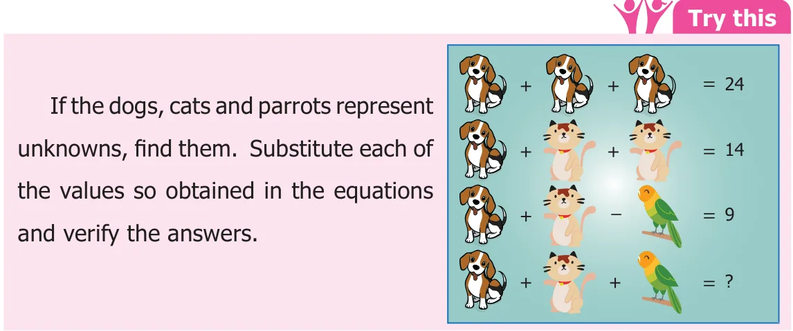

Now, let us learn to construct simple linear equations and solve them.
3.6.1 Construction of linear equations
Consider an expression \(7x + 3\), where x is the variable. When \(x = 2\), the value of the expression is \((7 \times 2) + 3 = 14 + 3 = 17\). Also, this can be written as \(7x + 3 = 17\), when \(x = 2\). \(7x + 3 = 17\) is called an equation. Moreover, no value of x other than 2 satisfies the Equation \(7x + 3 = 17\). Thus \(x = 2\) is called the solution to the equation \(7x + 3 = 17\). An equation, is always equated to either a numerical value or another algebraic expression. The equality sign shows that the value of the expression to the left of the '=' sign is equal to the value of the expression to the right of the '=' sign. In the above example, the expression \(7x + 3\) on the left side is equal to the constant 17 on the right side. In general, the RHS of an equation is just a number. But, this need not be always be so. The RHS may be an expression containing the variable. For example, the equation \(7x + 3 = 3x - 1\) has the expression \(7x + 3\) on the left and \(3x - 1\) on the right separated by an equality sign. Let us look at some situations where we have the value of an expression without actually knowing the values of each of the variables. The cost of 10 chairs and 4 tables is ₹4000. We are not given the price of a chair or a table. Let us take the price of one chair as ₹x and one table as ₹y. Then the cost of 10 chairs and 4 tables is \(10x + 4y\). Therefore, \(10x + 4y = 4000\). This is an equation in two variables x and y taking the value 4000. Let us consider some more examples and find the algebraic equations.
- "The cost of an apple and 2 mangoes is ₹120" If the price of an apple is a and one mango is m, then the required equation is \(a + 2m = 120\).
- "A rectangle of some dimensions has perimeter 50 cm". Fig.
If l and b are the length and breadth of the rectangle then we write
2 (l + b) \(= 50\).
- "Thamarai is 4 years elder to her sister Selvi and sum of their ages is 24"
The ages of Thamarai and her sister are treated as variables. Although, their ages are different, we consider this as one variable, because the age of Thamarai is associated to the age of Selvi. Suppose, if Selvi's age is 10, then the age of Thamarai is \(10 + 4 = 14\). In the same way, if the age of Selvi is x, then the age of Thamarai is \(x + 4\).
Thus we can form an equation as \(x +\) (x \(+ 4) = 24\). Otherwise, \(2x + 4 = 24\). Hence an equation can be looked as algebraic expression equated to either a constant or any other algebraic expression.
Try these
Try to construct algebraic equations for the following verbal statements.
- One third of a number plus 6 is 10
- The sum of five times of x and 3 is 28.
- Taking away 8 from y gives 11.
- Perimeter of a square with side a is 16cm.
- Venkat's mother's age is 7 years more than 3 times Venkat's age. His mother's
age is 43 years.
3.6.2 Solving an equation
An equation is like a weighing balance with equal weights on both of its pans, in which case the arm of the balance are exactly horizontal.
If we add the same weights to both the pans, \(x + 5 = 6\) the arms remains horizontal. In the same way, if we \(^{LHS} ^{RHS}\) remove the same weights from both the pans, then also the arm remains horizontal. We use the same with equal weights on both the pans principle for solving an equation. We use the following principles to separate the \(x + _{LHS}5 - 5 = 6 - 5_{RHS}\) variables and constants thereby solving an equation.
- If we add or subtract the same number on both
sides of the equation, the value remains the ADD/REMOVEL the same weights to/from
same. For example, to solve \(x + 5 = 12\), we have to subtract 5 on both sides, for separating \(x = 1\) the constants and variables of the equation, LHS RHS
that is \(x + 5 - 5 = 12 - 5\).
\(x + 0 = 7\) Hence \(x = 7\) [since 0 is the The unknown value can be found. additive identity]
Fig.3.8
Think
Why should we subtract 5 and not some other number? Why don't we add 5 on both sides? Discuss.
- Similarly, if we multiply or divide the equation with the same number on both sides,
the equation remains the same. For example, to solve the equation \(5y = 20\), divide by 5 on both sides. Thus we have \(\frac{11}{55} 5y 20\).
\(y = \frac{20}{5}\) Therefore, \(y = 4\)
- An equation remains the same, when the expressions on the left and on the right are
interchanged. The equation \(7x + 3 = 17\) is the same as \(17 = 7x + 3\). Similarly, the equation \(7x + 3 = 3x - 1\) is the same as \(3x - 1 = 7x + 3\).

Example 3.11 Find two consecutive natural numbers whose sum is 75. Solution The numbers are natural and consecutive. Let the numbers be x and \(x + 1\). Given that,
\(x +\) (x \(+ 1) = 75 2x + 1 = 75\)
\(2x + 1 - 1 = 75 - 1\) [Subtract 1 on both sides]
\(2x + 0 = 74\)
\(\frac{2x}{2} = \frac{74}{2}\) [Divide by 2 on both sides]
\(x = 37\) and \(x + 1 = 38\)
Therefore, the required numbers are 37 and 38.
Example 3.12
A person has ₹960 in denominations of ₹1, ₹5 and ₹10 notes. The number of notes in each denomination is equal. What is the total number of notes? Solution Let the number of notes in each denomination be x.
Then \(x + 5x + 10x = 960\)
\((1 + 5 + 10)x = 960\)
\(16x = 960\)
Divide by 16 on both the sides,
\(\frac{16x}{16} = 96016\) Therefore, \(x = 60\)
Thus, the number of notes in each denomination is 60.
Example 3.13
In an examination, a student scores 4 marks for every correct answer and loses one mark for every wrong answer. If he answers 60 questions in all and gets 130 marks, find the number of questions he answered correctly.
Solution Let the number of correct answers be x Thus the number of wrong answers \(= 60 - x\)
Then, \(4x - 1 (60 -\) x) \(= 130 4x - 60 + x = 130\)
\(4x + x - 60 + 60 = 130 + 60\) [Add 60 on both sides]
\(5x + 0 = 190 5x = 190\)
Divide by 5 on both the sides,
\(\frac{5x190}{55} = x = 38\)
Hence, the number of correct answer is 38.
Example 3.14
A school bus starts with full strength of 60 students. It drops some students at the first bus stop. At the second bus stop, twice the number of students get down from the bus. 6 students get down at the third bus stop and the number of students remaining in the bus is only 3. How many students got down at the first stop?
Solution
Since we do not know the number of students who get down at the first stop, let us take the number as x. The number of students get down at the second bus stop is 2x.
\(x + 2x +6+3 = 60 (1 + 2) x + 9 = 60\) Fig. \(3x + 9 = 60\)
\(3x + 9 - 9 = 60 - 9\) [Subtract 9 on both sides]
\(3x = 51\)
\(\frac{3x}{3} = \frac{51}{3}\) [Divide by 3 on both sides]
Therefore, \(x = 17\).
Thus, the number of students got down in the first bus stop is 17.
Example 3.15
A cricket team won two matches more than they lost. If they win they get 5 points and for loss \(- 3\) points, how many matches have they played if their total score is 50?
Solution
Let the number of matches lost \(= x\). Then number of matches won \(= x + 2\). Fig.3.10 Given that, \(5(x + 2) + (- 3)x = 50\)
\(5x + 10 - 3x = 50 2x + 10 = 50\)
\(2x + 10 - 10 = 50 - 10\) (Subtract 10 on both sides)
\(2x = 40\)
Divide by 2 on both the sides, \(x = 20\). Therefore, the number of matches played is \(x + x + 2 = 2x + 2\)
\(= (2 \times 20) + 2 = 40 + 2\)
Kandhan and Kavya are friends. Both of them are having some pens.
Kandhan : If you give me one pen, then we will have equal number of pens. Will you?
Kavya : But, if you give me one of your pens, then mine will become twice as yours. Will you?
Construct algebraic equations for this situation. Can you guess and find the actual number of pens, they have?